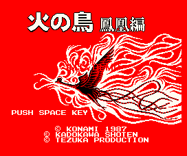

Hi no Tori (MSX)

The title translates to "The Firebird" or "The Phoenix". It is not the same
anime as the Gameboy game called "Fighbird". This anime was created by Tezuka
Osamu who also created the anime Astro Boy. It is a vertical-scrolling
shooter.
Return to Emulator Table of Contents
Last Modified 8 April 1997
Created 8 April 1997
Luis A. Cruz
cruzl@ccs.neu.edu